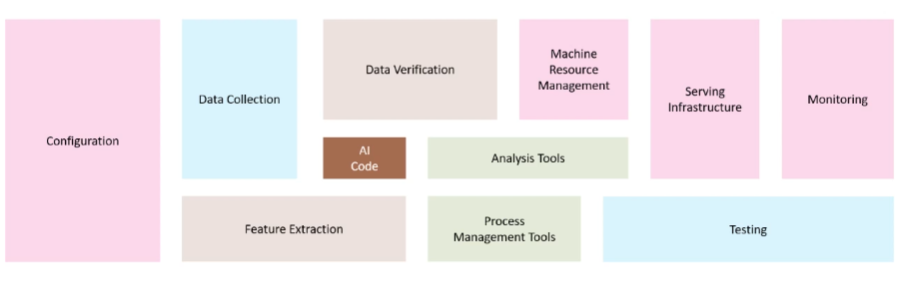
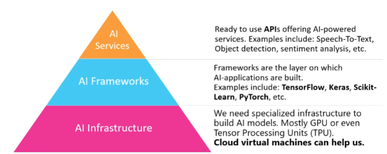

AI Services
What are AI Cloud services ?
How does Azure Machine Learning Service work ?
What are the other Auzer features we need ?
Integrating Azure Machine Learning Service with CI/CD ?
Applying Versioning to AI Service deployments
AI systems

AI Infrastructure > AI frameworks > AI services

AI Infrastructure
- Big data storage and compute machines
- GPU accelerated machines
- Cloud virtual machines
- Azure Data Science / Deep Learning Virtual Machines
- Amazon Machine Learning Instances
- Google CoLab (Running experimental Python notebooks on Google machines)
- Docker containers with pre-installed necessities for AI
AI frameworks
- TensorFlow, Keras, Scikit-Learn, PyTorch ...
- Mathematical implementations that help us in developing AI models
- Abstractions of the complexities
AI services
- Pre-built Cloud services:
- Azure Cognitive Services (Speech-to-text, text-to-speech ...)
- Google Assistant
- Online image classification services
- Custom-made for specific use-cases
Cloud services
- Many cloud services are already integrated in workflows
- Some cloud service providers (CSP’s) offer AI tools
- It is important to compare their workflow, it will change your development process
- A few examples of CSP’s
- IBM Cloud
- Amazon Web Services
- Microsoft Azure
- Google Cloud Platform
- Alibaba Cloud
Cloud AI Tools
- Cloud providers offer multiple tools to enhance our AI workflow
- AI Development
- AI Training
- AI Deployment
- Automation
- We will focus on the AI tools that can deploy our AI models
Azure

AWS Sagemaker

Differences


AWS scales for you when endpoints are used by many people. You don't have to setup kubernetes for this.


Differences

Conclusion

What we learned ?
- What AI services are
- What AI cloud services are
- Which cloud providers offer those AI services
- How the cloud services differ from each other
- The basic workflow of an AI deployment in AWS and GCP
- A more detailed workflow of an AI deployment in Azure (more on this later !)